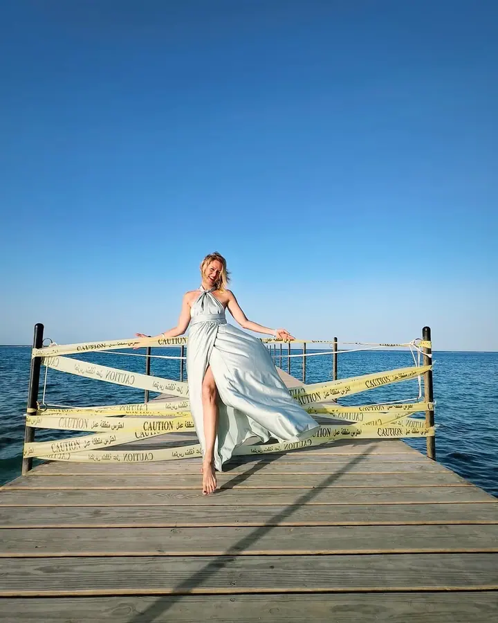
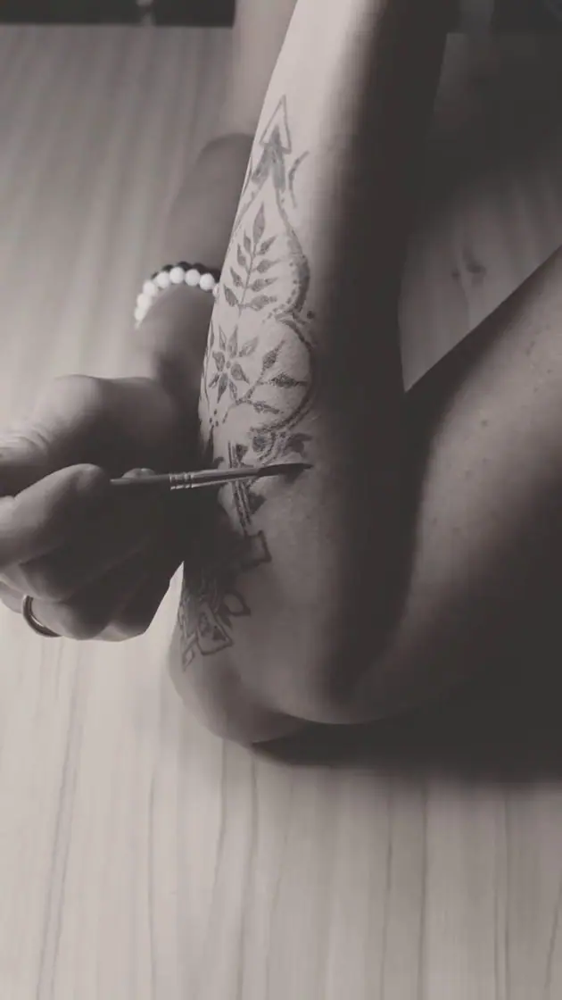

Svatební a umělecký fotograf
Zachycení okamžiků je umění
Jmenuji se Pavel Černý a pod značkou ANO FOTO fotím svatby v jižních Čechách. Zajímají mě nejen detaily, ale hlavně emoce a atmosféra. Vedle svateb se věnuji výtvarné fotografii těla a pohybu, kterou také vystavuji.
Zeptat se na termín
Co fotím
- Svatební fotografieNafotím celý váš svatební den od příprav přes obřad a portréty až po hostinu a noční zábavu. Celou dobu se mnou je asistent, který mi pomáhá se světlem.
Portfolio
@cernyfoto ↗Ahoj, jsem Pavel
Jmenuji se Pavel Černý a fotím v jižních Čechách pod značkou ANO FOTO. Na svatbě se snažím zaznamenat nejen to, co je vidět na první pohled, ale i emoce a atmosféru, které dělají váš den jedinečným.
Na svatby nejezdím sám. Celou dobu se mnou je můj asistent, který mi pomáhá se svícením, takže se nebojíme ani večerních fotek třeba v nočním městě. Všechny fotografie potom sám upravím a připravím pro vás online fotoalbum.
Fotografie je pro mě i výtvarná práce. Fotím tanec, pohyb a malbu na tělo a v říjnu 2025 jsme s Jitkou Pressovou představili výstavu fotografií a maleb Měsíční rituál v Galerii Na Dvorku v Českých Budějovicích.
- Fotím v jižních Čechách
- Fotím pod značkou ANO FOTO
- Na svatby jezdím s asistentem
- Fotím tanec a malbu na tělo
- Vystavoval jsem v Galerii Na Dvorku
- Vystavuji společně s Jitkou Pressovou
Jak to probíhá
- I
Napište mi
Pošlete mi datum a místo svatby přes formulář, e-mailem nebo zavolejte. Ozvu se vám, jestli mám termín volný.
- II
Vyberte balíček
Klasik pokrývá 8 hodin, Premium 12 hodin. Spolu probereme, co všechno chcete mít nafocené.
- III
Svatební den
Fotím přípravy, příjezd, obřad, skupinové i portrétní fotky, hostinu i noční zábavu. Celou dobu se mnou je asistent se světlem.
- IV
Úprava a album
Všechny fotografie postprodukčně upravím a vytvořím pro vás online fotoalbum.
Časté otázky
Kolik stojí svatební focení?
Balíček Klasik (8 hodin, zhruba 350 snímků) stojí 10 000 Kč. Balíček Premium (12 hodin, zhruba 490 snímků) stojí 13 000 Kč.
Co všechno během dne nafotíte?
Svatební přípravy, příjezd, obřad, skupinové, portrétní a aranžované fotografie, slavnostní hostinu i noční zábavu.
Proč s sebou berete asistenta?
Asistent mi pomáhá se svícením, hlavně večer a v noci, třeba při focení v nočním městě. Je se mnou po celou dobu focení v obou balíčcích.
Jak dostaneme hotové fotky?
Všechny fotografie upravím a připravím pro vás online fotoalbum, které můžete snadno sdílet s rodinou a hosty.